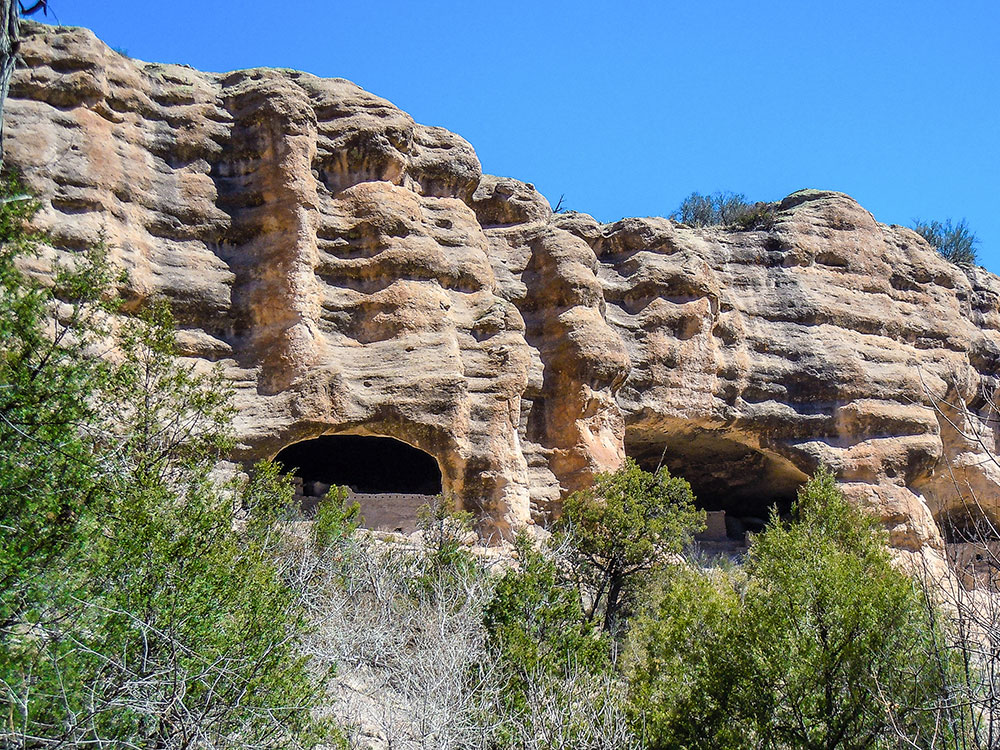
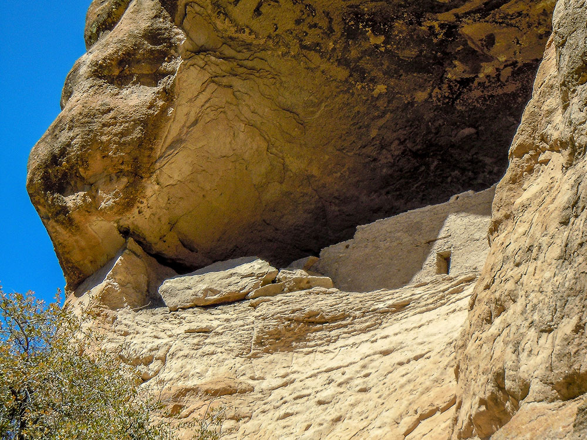
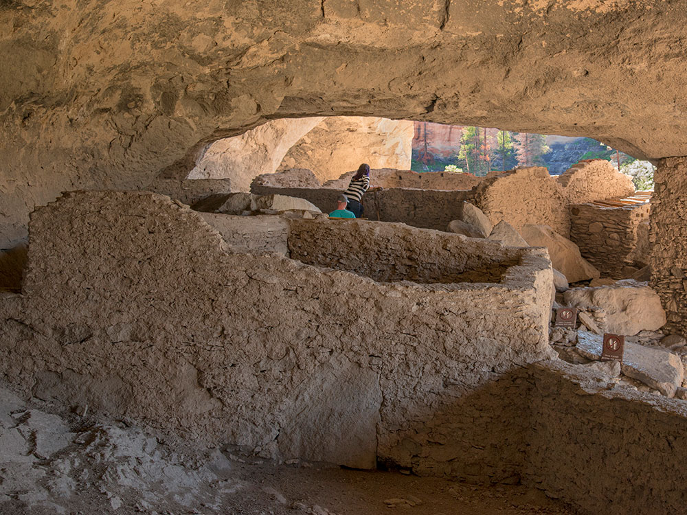
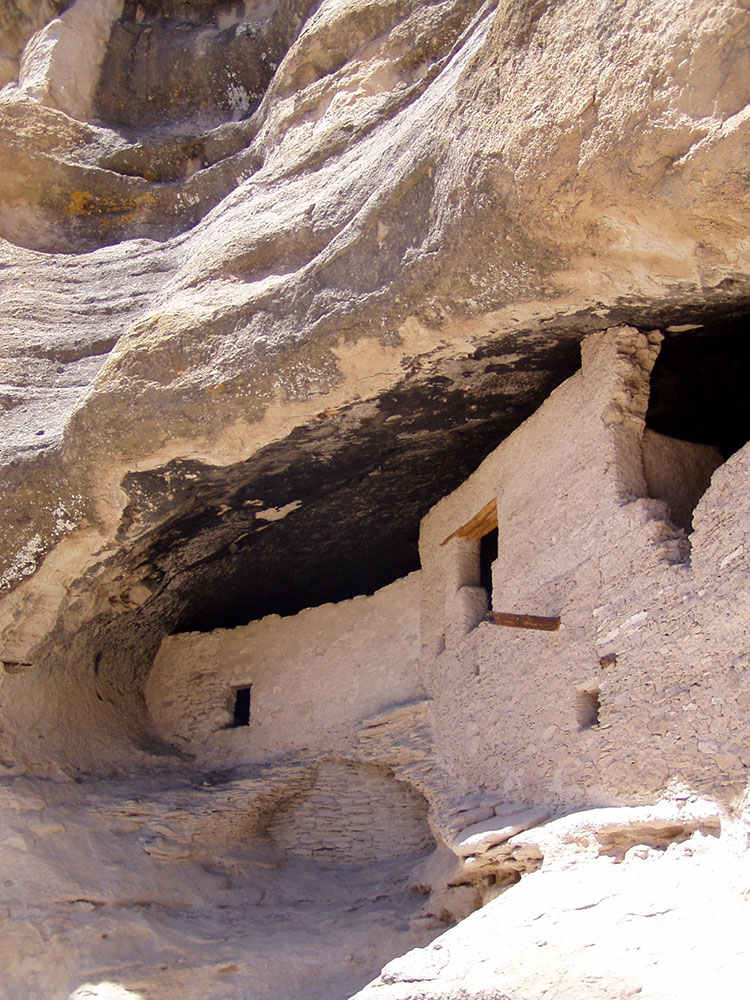
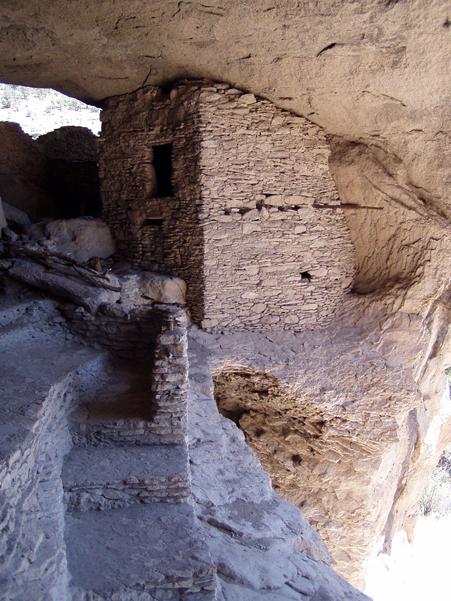
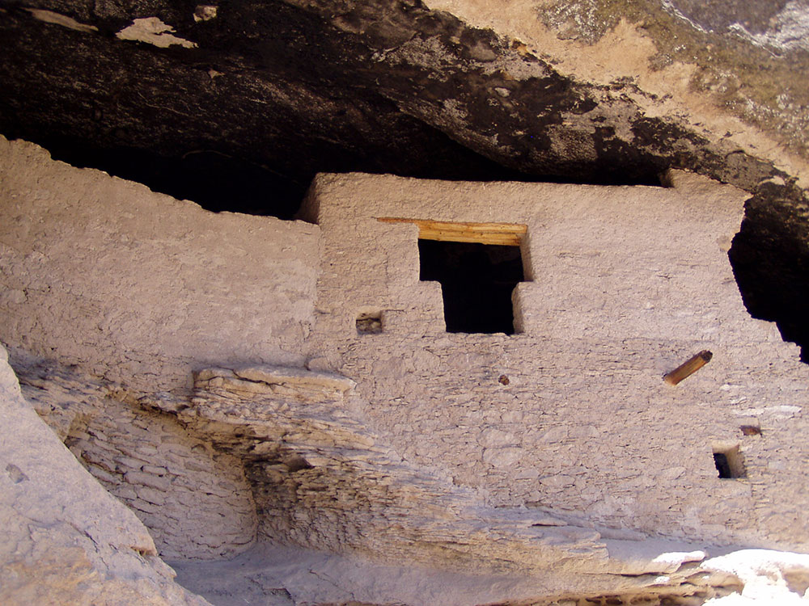

National Monument created to protect Mogollon cliff dwellings in the Gila Wilderness on the headwaters of the Gila River in southwest New Mexico
General Information
Visitor Center: 8am to 4:30pm
Closed Thanksgiving Day, Christmas Day, and New Year’s Day
How to Get There
From Silver City (45 mi): Take NM-15 north for about 44 miles to the monument; the drive is narrow and winding, taking roughly 1.5–2 hours.
Overview
Gila Cliff Dwellings National Monument protects well-preserved cliff dwellings built into natural caves in a side canyon of the Gila River by Mogollon people in the late 1200s. The small, 533-acre monument is surrounded by the Gila National Forest and the Gila Wilderness, the first area in the world to be designated as wilderness, and it is one of the most remote national monuments in the Southwest. Theodore Roosevelt proclaimed the monument in 1907 to protect the dwellings, which contain about 40 rooms in five caves. Visitors come to climb into the rooms along a scenic canyon trail, view the pictographs and pit houses of earlier peoples, and use the monument as a gateway to hot springs, river canyons and hundreds of miles of wilderness trails.
Access
The monument is at the end of NM-15 in Catron and Grant counties, about 44 miles and two hours north of Silver City, and a long way from larger cities. Visitors arrive by car, on steep, narrow and winding mountain roads: the main route is NM-15 from Silver City, and a longer alternative approaches through the Mimbres Valley on NM-35 and NM-15. Large RVs and long trailers are not recommended on these roads. There is no public transportation and services are limited, so fill your gas tank and bring food and water.
Seasons
The monument is open year-round, though the Gila region has strong seasons. Spring and fall bring comfortable temperatures and the best conditions for hiking. Summer is warm in the canyon with frequent monsoon thunderstorms that can flood the trail and the Gila River. Winters are mild to cold with occasional snow and ice, and the road and trails can be slippery. The river crossings on the Cliff Dweller Canyon trail can run high in spring snowmelt and after rain, and the visitor center hours are shorter in winter.
Things to Do
Step Inside the Mogollon Cliff Dwellings
Gila Cliff Dwellings National Monument is one of the few places in the Southwest where visitors can walk into original cliff dwellings. The dwellings were built into a series of natural caves high above the canyon floor.
Hike the Cliff Dweller Canyon Trail
A loop trail winds along the creek, crossing footbridges beneath cottonwoods and rock walls on the way to the cave rooms. Visitors can explore the rooms on a self-guided basis, with rangers often on hand to answer questions.
Visit the Trail to the Past
Near the visitor center, a short trail leads to pictographs painted on a cliff face and to the remains of an earlier pit house village, giving a glimpse of older cultures in the canyon.
Explore the Gila Wilderness
The surrounding Gila Wilderness has hundreds of miles of trails along rivers and canyons, forests and mesas. Many visitors combine the monument with a day hike or backpacking trip along the Middle Fork of the Gila River.
Soak in Natural Hot Springs
Several natural hot springs near the Gila River are within a short drive of the monument, and a soak is a popular way to end a day of hiking.
Top Trails
Cliff Dweller Canyon Trail
Length: Approximately 1 mile loop
Elevation Gain: Moderate (about 180 feet)
Difficulty: Easy to Moderate
This trail climbs gently along a stream, crosses several footbridges and ends at the cave dwellings, where visitors can walk through the rooms. The walk takes about an hour and has some steps and uneven rock.
Trail to the Past
Length: Less than 1 mile round trip
Elevation Gain: Minimal
Difficulty: Easy
This short walk begins near the visitor center and leads to pictographs and pit house remains. It is a good addition for visitors with extra time.
Middle Fork of the Gila River Trail
Length: Varies; day hikes of several miles are common
Elevation Gain: Minimal to moderate
Difficulty: Moderate
This trail follows the Middle Fork through a canyon with frequent river crossings, so expect wet feet. It is one of the classic ways to experience the Gila Wilderness.
Visitor Centers
The Gila Cliff Dwellings Visitor Center, jointly operated by the National Park Service and the U.S. Forest Service, sits near the trailhead and has a small museum with Mogollon and Apache artifacts, exhibits on the culture and natural history of the canyon, a bookstore and restrooms. Rangers provide trail and road conditions, wilderness information and hot springs advice. Hours vary by season, so check the National Park Service website, and plan to arrive early because the trail to the dwellings has a limited visiting period. Admission is free.
Camping and Lodging
There is no lodging at the monument, but several national forest campgrounds are nearby, including Grapevine and Forks campgrounds along the Gila River, plus other primitive sites in the area. A small number of cabins, lodges and RV sites are in the Gila Hot Springs area close to the monument. Silver City, about two hours away, has the widest selection of hotels, inns and restaurants, and the villages of the Mimbres Valley have bed-and-breakfasts and cabins. Check each property's website for current availability.
The monument consists of 553 acres (2.24 km2) and contains the remains of a Mimbres Culture community in various locations, two of which are most prominent. The namesake ruins' developers made use of natural caves to build interlinked dwellings within five cliff alcoves above Cliff Dweller Canyon. The TJ Ruins are located on a bluff overlooking the Gila River. The Mogollon peoples are believed to have inhabited the region from between 1275 and into the early 14th century, during the Pueblo III Era.
Archaeologists have identified 46 rooms in the five caves on Cliff Dweller Canyon, and believe they were occupied by 10 to 15 families. The "Heart-Bar Site" or the TJ Ruins (named for the former ranch from which the mesa takes its name) located on TJ Mesa are largely un-excavated. It is not known why the community was abandoned.
Hopi oral tradition refers to migrations occurred based cycles calendars, and in response to changing environmental conditions. Other ruins include Javalina House, about 1/3 mile above the main ruin, West Fork Ruin, currently under Highway 15 across from Woody Corral, Three Mile Ruin along the west fork of the Gila River, and middle fork of the Gila River at the 11-room Cosgrove Ruin. Dendrochronology (tree ring dating) determined that the wood used in the dwellings were cut between 1276 and 1287. The region provided for growing, gathering and hunting food.
To visit the namesake dwellings, visitors are required to hike a well-traveled 1-mile-long (1.6 km) trail loop with several foot bridges over a stream. The entire walk takes about an hour. The hike begins at an elevation of 5,695 feet (1,736 m) and ends at 5,875 feet (1,791 m).
A museum and visitor center is located at the monument near the TJ Ruins. The visitor center is jointly operated by the U.S. Forest Service and the National Park Service. The museum hosts exhibits of Apache and Mogollon artifacts, uncovered both in the surrounding wilderness and at the monument. Displayed items include a bracelet crafted from Glycymeris Bittersweet clam shells found by a student park ranger, Charles Grymko. Believed to have been brought via trade from the Gulf of California to Snaketown (an ancient village on the right bank of the Gila River on the modern-day Gila River Indian Community south of the village of Ahwatukee), the shell eventually was etched and drilled by Hohokam artisans. The bracelet is believed then to have made its way up the Gila River from Arizona to the Gila River community, again by way of trade.
This article uses material from the Wikipedia article and official pages for Plan Your Visit - Gila Cliff Dwellings National Monument, Backpacking in the Gila Wilderness, Western National Parks Association, Visiting Gila Cliff Dwellings National Monument, AllTrails Guide, released under the Creative Commons Attribution-Share-Alike License 3.0. Additional information from the National Park Service.
Featured Trails

Placeholder, License, via Wikimedia Commons; Image Size Adjusted
Cliff Dwellings Trail
Difficulty: Easy to Moderate
Short scenic loop leading visitors into ancient cliff dwellings with canyon views along the way

Placeholder, License, via Wikimedia Commons; Image Size Adjusted
West Fork Gila River Trail
Difficulty: Moderate
River-side trail with multiple stream crossings through lush canyon scenery and wildlife habitat
Placeholder, License, via Wikimedia Commons; Image Size Adjusted
Little Bear Canyon Loop
Difficulty: Hard
Rugged wilderness loop featuring slot canyons, elevation changes, and diverse desert landscapes



.jpg){kind=link}






